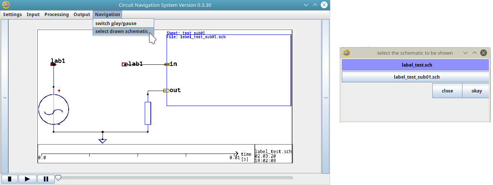

Subsheets
Definition
Subsheets, also called "Hierarchical Sheets" are parts of circuit, which contain one or more components.
When creating circuits that are more complex, then packing some of the components into a subsheet may be desirable. By making a subsheet, you can make your circuit look more cleaned up, because some of the parts are not shown in the top hierarcy of your circuit, but "hidden" in the subsheet. Also you can re-use that circuit part, and use it multiple times in this circuit. That is easier than placing the same components again and again.
How to use subsheets
Subsheets can be created in KiCad Eeschema, as described in this wiki. When you have created the top-level circuit, and all its subsheets, save them in the same folder, because otherwise they will not be linked to each other. Then you can open the top-level circuit with the Animated CAD. The subsheets of that circuit will also be loaded, so that you can analyze the top-level circuit and any subsheet. You can switch between the sheets by selecting "Navigation" -> "select drawn schematic", as shown in the following image:

in this image a top-level circuit, called "label_test.sch" has a subsheet, called "label_test_sub01.sch":
on the left, the main window, with the mouse on the field to open the schematic-select-dialog
on the right, that schematic-select-dialog.